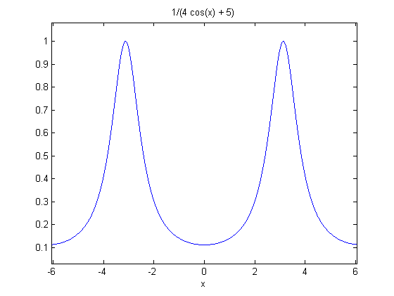
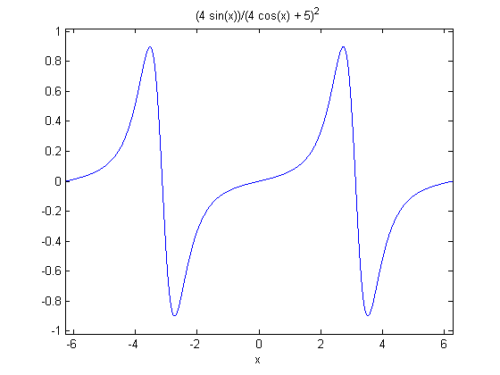
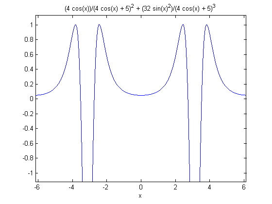
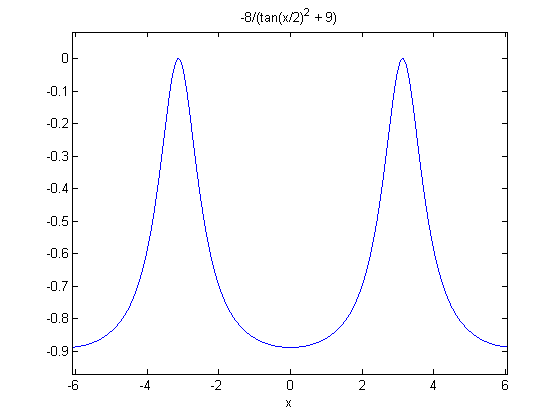
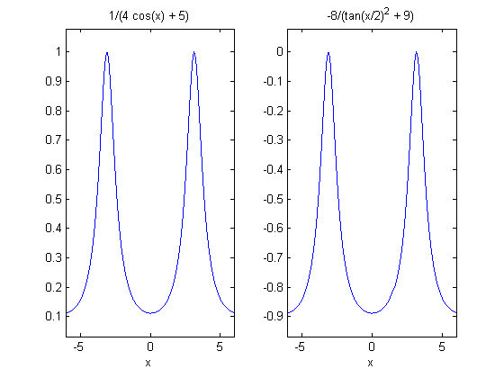
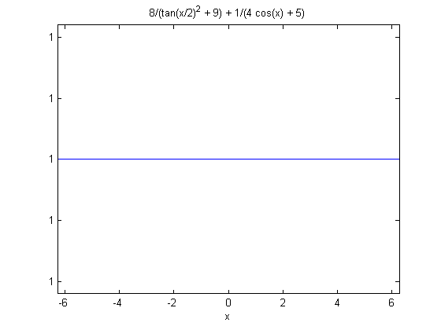
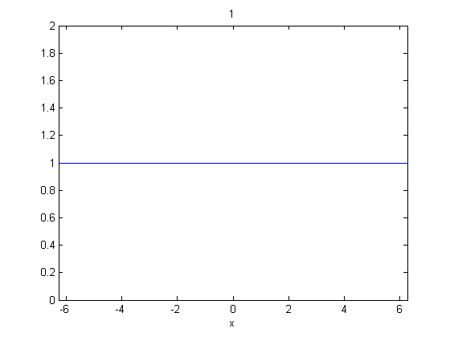

微積分
このデモでは、微積分の簡単な例で Symbolic Math Toolbox™ 製品を使用する方法を示します。
シンボリック変数を操作するために、SYM というタイプのオブジェクトを作成します。
x = sym('x')
x = x
定義したシンボリック変数を使用して、関数を作成できます。EZPLOT を使用すると、数式を容易にプロットできます。
f = 1/(5+4*cos(x)) ezplot(f)
f = 1/(4*cos(x) + 5)
シンボリック変数を扱うことができる関数は多数あります。たとえば、DIFF は関数を微分します。
f1 = diff(f) ezplot(f1)
f1 = (4*sin(x))/(4*cos(x) + 5)^2
DIFF はさらに、N 次導関数を求めることもできます。以下は、2 次導関数です。
f2 = diff(f,2) ezplot(f2)
f2 = (4*cos(x))/(4*cos(x) + 5)^2 + (32*sin(x)^2)/(4*cos(x) + 5)^3
INT は、シンボリック変数の関数を積分します。2 次導関数を 2 回積分することで元の関数を得る試みを以下に示します。
g = int(int(f2)) ezplot(g)
g = -8/(tan(x/2)^2 + 9)
一見すると、f のプロットと g のプロットは同じように思われます。しかし、これらの式と y 軸上範囲をよく観察してください。
subplot(1,2,1) ezplot(f) subplot(1,2,2) ezplot(g)
e は f と g の差です。e の式は複雑ですが、このグラフは定数のようです。
e = f - g subplot(1,1,1) ezplot(e)
e = 8/(tan(x/2)^2 + 9) + 1/(4*cos(x) + 5)
この差が実際に定数であることを示すために、上記の方程式を単純化します。これにより、この差が実際に定数であることを確認できます。
e = simple(e) ezplot(e)
e = 1